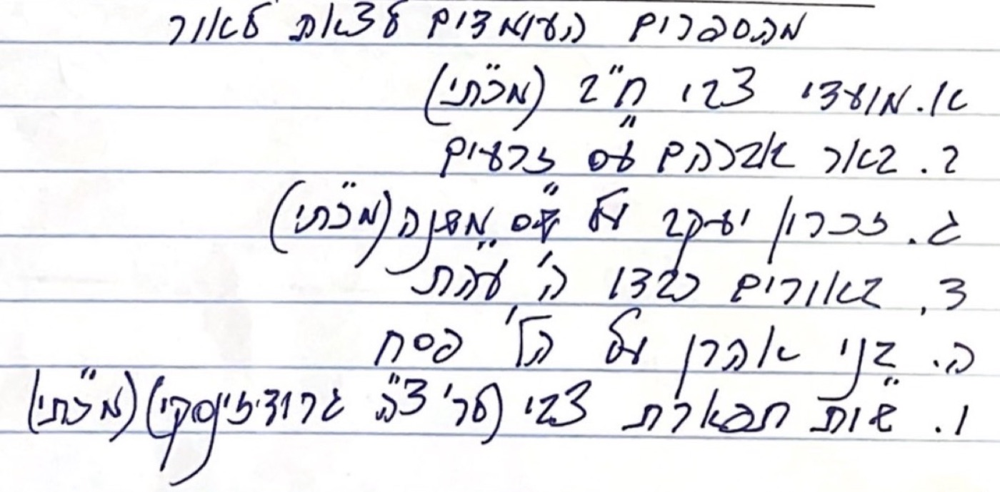
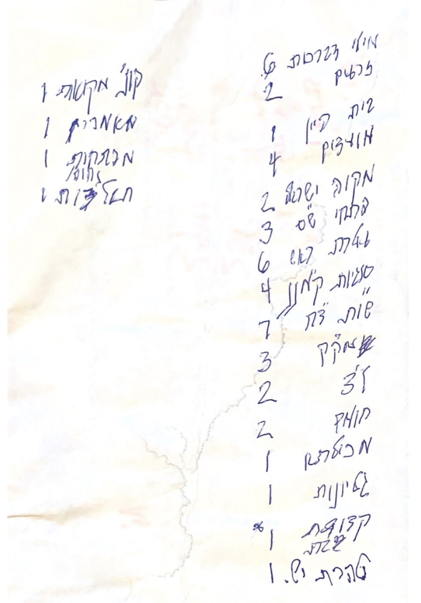

ספרים בהכנה
רשימה בכתב ידו של הספרים שהתכוון להוציא לאור, בשלבי הכנה שונים.
פרויקט ההוצאה לאור ממשיך את המפעל שהרב שלום זצ״ל הוביל בימי חייו הקצרים — הוצאה לאור והחייאה של תורת הראשונים והאחרונים, חלקה שלא נדפסה מעולם וחלקה שנעלמה מן המדפים לפני שנים רבות.
כל ספר זכה להסכמות מרבנים וראשי ישיבות חשובים. מכתבים הגיעו מכל רחבי העולם ובהם הבעת תודה על הספרים — ולא פעם גם חידושים עליהם. לחצו על שם הרב לעיון בהסכמה.
הקרלסבורגער רב
ברוקלין
בעת הסתלקותו עמל הרב שלום זצ״ל במסירות על כמה ספרים, חלקם קרובים להשלמה. כמו כן היה ממייסדי מכון להוצאה לאור של כתבי היד של הגאון רבי צבי הירש גראדזענסקי זצ״ל, במטרה להוציא לאור כ-50 מהם, לצד ספרים יקרים שנעלמו מן המדפים.

רשימה בכתב ידו של הספרים שהתכוון להוציא לאור, בשלבי הכנה שונים.

ברשות הרב שלום זצ״ל היו כתבי יד רבים של הגאון רבי צבי הירש גראדזענסקי זצ״ל, שאותם התכוון להביא לדפוס.